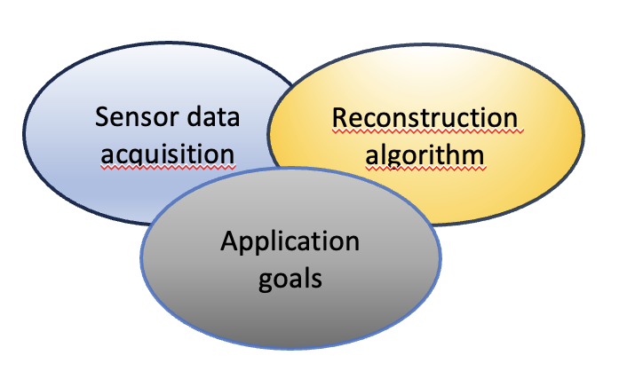
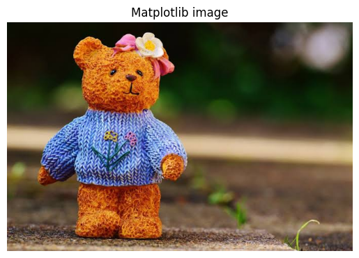
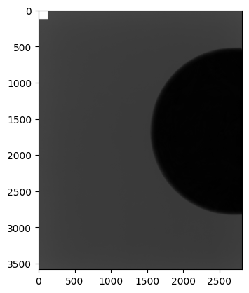

Image processing, Computer Vision and Computer Graphics#
Image Processing: Image Processing is the field of enhancing the images by tuning many parameter and features of the images. So Image Processing is the subset of Computer Vision. Here, transformations are applied to an input image and the resultant output image is returned. Some of these transformations are- sharpening, smoothing, stretching etc. Now, as both the fields deal with working in visuals, i.e., images and videos, there seems to be lot of confusion about the difference about these fields of computer science.
Computer Vision: In Computer Vision, computers or machines are made to gain high-level understanding from the input digital images or videos with the purpose of automating tasks that the human visual system can do. It uses many techniques and Image Processing is just one of them.
Computer graphics
In Computer Graphics are introduced as drawings or any type of sketch that can represent some meaningful information in the form of pictures. Computer graphics is used widely in the software and computer field when there is a set of images that needs to be created or manipulated such as in digital films, the entertainment industry, or digital photography.
Image processing and computer vision


Image processing and computer vision
Image processing and computer graphics


Image processing and computer graphics
Computational imaging
Computational algorithms are essential to convert data to images.
Contrary to popular believes, sensors almost never directly generate usable images.
Real imaging systems require that raw sensors date be processed using algorithms to form the resulting images.
{kind=link}

Why a math course on Computational Imaging in the Computer Science LM?


Organization of the CI course
Module I:
Introduction to computational imaging (CI) CI as inverse problem Model-based reconstruction methods
Module II:
Introduction to different types of neural networks in imaging Deep learning based reconstruction methods Learnt model based reconstruction methods (a mention)
Both with examples python programs.
The digital image#
A continuous (or analogue) grayscale image is a function \(f:\Omega \subset R^2 \rightarrow R\)
A discrete (or digital) image A is a matrix of size M xN obtained by discretinzing the function f.
The intersection between a row and a column is called pixel

The value assigned to every pixel is the average brightness in the pixel rounded to the nearest integer value. The process of representing the amplitude of the 2D signal at a given coordinate as an integer value with L different gray levels is usually referred to as amplitude quantization or simply quantization.
In the case of color images, three values are associated to each pixel, for example in the R(red)G(green)B(blue) (RGB) scale. Many techniques developed for the single channel image are repeated on the three channels .

Example of RGB channels of a color image.

Image file formats

File formats of medical images

A DICOM file (Digital Imaging and Communications in Medicine) is a standard format used for medical images (CT, MRI, ultrasound, X-ray, etc.) that combines both the image and clinical/technical information in a single file. It’s not just an image—it’s a structured container.


In python, we can use the pydicom library to explore both metadata and the image in the dicom file.
How to read images in Python#

Open CV
Computer vision + fast processing.
Filters, edge detection, warping, feature detection, registration, calibration, etc. Very fast (C++ underneath). Excellent for numerical pipelines.
How it represents the image: numpy.ndarray Color channels: default is BGR (not RGB) → classic source of confusion. Data types: handles uint8, uint16, and float very well.
Pros:
Very complete for image processing
High performance
Huge number of algorithms Cons:
BGR vs RGB confusion
imshow requires a GUI (often does not work in notebooks)
Matplotlib
Visualization and plotting (not an “image processing library”).
Used for: Displaying images in notebooks Creating figures with overlays, colormaps, colorbars, ROIs, etc. Perfect for scientific 2D/3D images (slices, heatmaps)
How it represents the image: numpy.ndarray Colors: expects RGB (or grayscale) Data types: often works best with normalized float values or uint8; special care needed for 16-bit images.
Pros:
Ideal for debugging and reports
Works everywhere (including Jupyter) Cons:
Not designed for “serious” image processing (although some things can be done)
Slower than OpenCV for certain operations
Pillow (PIL)
I/O and “image-style” manipulations (photography/graphics).
What it is used for:
Open/save images
Resize, crop, rotate
Draw text, ….
Very convenient for working with “standard” PNG/JPEG/TIFF images How it represents the image: PIL.Image.Image object You can convert it to NumPy with np.array(img). Colors: typically RGB (or L, RGBA, etc.)
Pros:
Simple and clean API
Excellent for common formats and basic operations Cons:
Less suitable for advanced computer vision
With scientific 16-bit/float images it can be more “delicate” (depends on the format)
ImageIO
Easy reading/writing of many formats (including stacks).
What it is used for:
Convenient for saving GIFs/videos or reading image sequences How it represents the image: numpy.ndarray Colors: usually RGB (depends on the format/plugin)
Pros:
Very simple for NumPy-based I/O
Excellent for multi-page / stack TIFF files
Cons:
Not a processing library: mainly focused on I/O
Different backends/plugins → sometimes different behaviors
import numpy as np
# use OpenCV
import cv2
#img_cv = cv2.imread("peppers_color.tif")
img_cv = cv2.imread("images.jpeg")
print("OpenCV:")
print(type(img_cv))
print(" shape:", img_cv.shape)
print(" dtype:", img_cv.dtype)
print(" min/max:", img_cv.min(), img_cv.max())
# OpenCV visualization (desktop only)
# cv2.imshow("OpenCV image", img_cv)
# cv2.waitKey(0)
# cv2.destroyAllWindows()
# Save the image
cv2.imwrite("images_cv.jpeg", img_cv)
OpenCV:
<class 'numpy.ndarray'>
shape: (451, 679, 3)
dtype: uint8
min/max: 0 255
True
#Use ImageIO
import imageio.v2 as imageio
#img_io = imageio.imread("peppers_color.tif")
img_io = imageio.imread("images.jpeg")
print("ImageIO:")
print(type(img_io))
print(" shape:", img_io.shape)
print(" dtype:", img_io.dtype)
print(" min/max:", img_io.min(), img_io.max())
# --- Check the difference between the two arrays (convert OpenCV in RGB) ---
img_cv_rgb = cv2.cvtColor(img_cv, cv2.COLOR_BGR2RGB)
diff = np.abs(img_cv_rgb.astype(int) - img_io.astype(int))
print("\nMaximum difference between OpenCV (converted in RGB) and Imageio:", diff.max())
# Save the image
#Make sure your array dtype is np.uint8 for normal 8-bit images.
# If you have floating-point arrays (0–1), scale them to 0–255 first:
#image_uint8 = (image_float * 255).astype(np.uint8)
imageio.imwrite("output_image_imageio.jpeg", img_io)
ImageIO:
<class 'numpy.ndarray'>
shape: (451, 679, 3)
dtype: uint8
min/max: 0 255
Maximum difference between OpenCV (converted in RGB) and Imageio: 0
# use pyplot
import matplotlib.pyplot as plt
#img_plt = plt.imread("peppers_color.tif")
img_plt = plt.imread("images.jpeg")
print("Matplotlib:")
print(" shape:", img_plt.shape)
print(" dtype:", img_plt.dtype)
print(" min/max:", img_plt.min(), img_plt.max())
# Matplotlib visualization
plt.imshow(img_plt)
plt.title("Matplotlib image")
plt.axis('off')
plt.show()
# Save
plt.imsave("image_plt.jpeg", img_plt)
# if the image is grayscale:
#plt.imsave("image_plt_bn.jpeg", img_plt,cmap="gray")
Matplotlib:
shape: (451, 679, 3)
dtype: uint8
min/max: 0 255

# Dicom file
import pydicom
# Read dicom file
ds = pydicom.dcmread("proj.dcm")
# Show the main metadata
print(ds)
# Show the image
plt.figure()
plt.imshow(ds.pixel_array, cmap='gray')
plt.show()
#ds1 = pydicom.dcmread("reco.dcm")
# Show the main metadata
#print(ds1)
Dataset.file_meta -------------------------------
(0002,0000) File Meta Information Group Length UL: 206
(0002,0001) File Meta Information Version OB: b'\x00\x01'
(0002,0002) Media Storage SOP Class UID UI: Digital Mammography X-Ray Image Storage - For Processing
(0002,0003) Media Storage SOP Instance UID UI: 2.16.840.1.113669.632.25.1.103374.20240502120725128.10.3.5
(0002,0010) Transfer Syntax UID UI: Explicit VR Little Endian
(0002,0012) Implementation Class UID UI: 1.2.276.0.7230010.3.0.3.6.3
(0002,0013) Implementation Version Name SH: 'OFFIS_DCMTK_363'
-------------------------------------------------
(0008,0005) Specific Character Set CS: 'ISO_IR 100'
(0008,0008) Image Type CS: ['ORIGINAL', 'PRIMARY', '', '', '']
(0008,0016) SOP Class UID UI: Digital Mammography X-Ray Image Storage - For Processing
(0008,0018) SOP Instance UID UI: 2.16.840.1.113669.632.25.1.103374.20240502120725128.10.3.5
(0008,0020) Study Date DA: '20240502'
(0008,0021) Series Date DA: '20240502'
(0008,0022) Acquisition Date DA: '20240502'
(0008,0023) Content Date DA: '20240502'
(0008,0030) Study Time TM: '090232'
(0008,0031) Series Time TM: '120715'
(0008,0032) Acquisition Time TM: '120725'
(0008,0033) Content Time TM: '120725'
(0008,0050) Accession Number SH: ''
(0008,0060) Modality CS: 'MG'
(0008,0068) Presentation Intent Type CS: 'FOR PROCESSING'
(0008,0070) Manufacturer LO: 'IMS GIOTTO S.p.A.'
(0008,0090) Referring Physician's Name PN: ''
(0008,1010) Station Name SH: 'GIOTTO CLASS'
(0008,1050) Performing Physician's Name PN: ''
(0008,1070) Operators' Name PN: ''
(0008,1090) Manufacturer's Model Name LO: 'GIOTTO CLASS'
(0008,2218) Anatomic Region Sequence 1 item(s) ----
(0008,0100) Code Value SH: 'T-04000'
(0008,0102) Coding Scheme Designator SH: 'SRT'
(0008,0104) Code Meaning LO: 'Breast'
---------
(0008,3010) Irradiation Event UID UI: 2.16.840.1.113669.632.25.1.103374.20240502120715307.8
(0010,0010) Patient's Name PN: 'DBT^31 PROJ'
(0010,0020) Patient ID LO: 'MADAVERO'
(0010,0030) Patient's Birth Date DA: '19840328'
(0010,0040) Patient's Sex CS: 'F'
(0010,1010) Patient's Age AS: '040Y'
(0010,1020) Patient's Size DS: None
(0010,1030) Patient's Weight DS: None
(0018,0015) Body Part Examined CS: 'BREAST'
(0018,0060) KVP DS: '27'
(0018,1000) Device Serial Number LO: '103374'
(0018,1020) Software Versions LO: 'Raffaello 4.19.8.0 - IMSProc 4.17.3.2 - Tiziano 4.15.0.3'
(0018,1030) Protocol Name LO: 'Mammography'
(0018,1110) Distance Source to Detector DS: '688.9'
(0018,1111) Distance Source to Patient DS: '672.0'
(0018,1114) Estimated Radiographic Magnificatio DS: '1.000'
(0018,1147) Field of View Shape CS: 'RECTANGLE'
(0018,1149) Field of View Dimension(s) IS: [297, 233]
(0018,1150) Exposure Time IS: '38'
(0018,1151) X-Ray Tube Current IS: '104'
(0018,1152) Exposure IS: '4'
(0018,1153) Exposure in uAs IS: '4050'
(0018,1160) Filter Type SH: 'STRIP'
(0018,1164) Imager Pixel Spacing DS: [0.0829, 0.0829]
(0018,1166) Grid CS: 'NONE'
(0018,1190) Focal Spot(s) DS: '0.3'
(0018,1191) Anode Target Material CS: 'TUNGSTEN'
(0018,11A0) Body Part Thickness DS: '40'
(0018,11A2) Compression Force DS: '9.8'
(0018,11A4) Paddle Description LO: '24x30'
(0018,1405) Relative X-Ray Exposure IS: '2075'
(0018,1508) Positioner Type CS: 'MAMMOGRAPHIC'
(0018,1510) Positioner Primary Angle DS: '0'
(0018,1511) Positioner Secondary Angle DS: '0'
(0018,1530) Detector Primary Angle DS: '0'
(0018,1531) Detector Secondary Angle DS: '0.907889'
(0018,5101) View Position CS: 'CC'
(0018,7001) Detector Temperature DS: '32'
(0018,7004) Detector Type CS: 'DIRECT'
(0018,7005) Detector Configuration CS: 'AREA'
(0018,700A) Detector ID SH: 'AP01-23387'
(0018,700C) Date of Last Detector Calibration DA: '20240418'
(0018,701A) Detector Binning DS: [1, 1]
(0018,7020) Detector Element Physical Size DS: [0.085, 0.085]
(0018,7022) Detector Element Spacing DS: [0.085, 0.085]
(0018,702B) Detector Manufacturer's Model Name LO: 'SCREEN+'
(0018,7050) Filter Material CS: 'SILVER'
(0018,7052) Filter Thickness Minimum DS: '0.05'
(0018,7054) Filter Thickness Maximum DS: '0.05'
(0018,7060) Exposure Control Mode CS: 'AUTOMATIC'
(0018,7062) Exposure Control Mode Description LT: Array of 184 elements
(0018,8151) X-Ray Tube Current in uA DS: '104400'
(0018,9559) Positioner Primary Angle Direction CS: 'CW'
(0020,000D) Study Instance UID UI: 2.16.840.1.113669.632.25.1.103374.20240502090232863.1
(0020,000E) Series Instance UID UI: 2.16.840.1.113669.632.25.1.103374.20240502120715244.2.5
(0020,0010) Study ID SH: '581-193'
(0020,0011) Series Number IS: '18'
(0020,0013) Instance Number IS: '10'
(0020,0020) Patient Orientation CS: ['P', 'L']
(0020,0052) Frame of Reference UID UI: 2.16.840.1.113669.632.25.1.103374.20240502120715286.6
(0020,0062) Image Laterality CS: 'R'
(0020,1040) Position Reference Indicator LO: ''
(0028,0002) Samples per Pixel US: 1
(0028,0004) Photometric Interpretation CS: 'MONOCHROME1'
(0028,0010) Rows US: 3580
(0028,0011) Columns US: 2812
(0028,0100) Bits Allocated US: 16
(0028,0101) Bits Stored US: 13
(0028,0102) High Bit US: 12
(0028,0103) Pixel Representation US: 0
(0028,0120) Pixel Padding Value US: 7500
(0028,0121) Pixel Padding Range Limit US: 1952
(0028,0300) Quality Control Image CS: 'YES'
(0028,0301) Burned In Annotation CS: 'NO'
(0028,1040) Pixel Intensity Relationship CS: 'LIN'
(0028,1041) Pixel Intensity Relationship Sign SS: 1
(0028,1052) Rescale Intercept DS: '0'
(0028,1053) Rescale Slope DS: '1'
(0028,1054) Rescale Type LO: 'US'
(0028,1300) Breast Implant Present CS: 'NO'
(0028,1350) Partial View CS: 'NO'
(0028,2110) Lossy Image Compression CS: '00'
(0040,0244) Performed Procedure Step Start Date DA: '20240502'
(0040,0245) Performed Procedure Step Start Time TM: '090232'
(0040,0253) Performed Procedure Step ID SH: '20231333'
(0040,0254) Performed Procedure Step Descriptio LO: ''
(0040,0314) Half Value Layer DS: '0.518'
(0040,0316) Organ Dose DS: '0.00062'
(0040,0318) Organ Exposed CS: 'BREAST'
(0040,0555) Acquisition Context Sequence 0 item(s) ----
(0040,8302) Entrance Dose in mGy DS: '0.179'
(0040,8303) Entrance Dose Derivation CS: 'IAK'
(0054,0220) View Code Sequence 1 item(s) ----
(0008,0100) Code Value SH: 'R-10242'
(0008,0102) Coding Scheme Designator SH: 'SRT'
(0008,0104) Code Meaning LO: 'cranio-caudal'
(0054,0222) View Modifier Code Sequence 0 item(s) ----
---------
(1269,0010) Private Creator LO: 'Raffaello Biopsy Private Code'
(1269,1001) Private tag data IS: '0'
(1271,0010) Private Creator LO: 'Raffaello Mammography Private Code'
(1271,1020) Private tag data IS: '3'
(1271,1021) Private tag data IS: '2'
(1271,1022) Private tag data IS: '0'
(1271,1025) Private tag data IS: '0'
(1271,1038) Private tag data LO: 'YES'
(1271,1039) Private tag data US: [268, 268]
(1271,1040) Private tag data US: [536, 536]
(1271,1041) Private tag data LO: ['CURRENT', 'STANDARD']
(1271,1053) Private tag data LO: '1.00'
(1271,1054) Private tag data IS: '0'
(1271,1055) Private tag data LO: '1952'
(1271,1070) Private tag data DS: '648.8'
(1271,1071) Private tag data DS: '0.000'
(1271,1072) Private tag data DS: '0.000'
(1271,1073) Private tag data DS: '0.000'
(1271,1074) Private tag data IS: '1792'
(1271,1075) Private tag data IS: '0'
(1271,1076) Private tag data DS: '0.964'
(1271,1077) Private tag data DS: '0.964'
(1271,1078) Private tag data DS: '0.964'
(1271,1079) Private tag data IS: '10'
(1271,1080) Private tag data IS: '21'
(1271,1082) Private tag data IS: '1'
(1271,1083) Private tag data LO: ''
(1271,1084) Private tag data LO: ''
(1271,1086) Private tag data LT: Array of 73 elements
(1271,1087) Private tag data IS: '6'
(1271,1088) Private tag data IS: '0'
(1271,1091) Private tag data LO: '1.4'
(1271,1093) Private tag data IS: '0'
(1271,1097) Private tag data IS: '7500'
(1271,1098) Private tag data IS: '2'
(1271,1099) Private tag data IS: '2'
(1271,109A) Private tag data IS: '2'
(1271,109B) Private tag data IS: '2'
(1271,10A1) Private tag data US: 0
(1271,10A4) Private tag data LO: ''
(1271,10A5) Private tag data SS: 0
(1271,10B2) Private tag data DS: '-0.90789'
(2050,0020) Presentation LUT Shape CS: 'INVERSE'
(7FE0,0010) Pixel Data OW: Array of 20133920 elements

Image compression#
Image compression is the process of reducing the file size of an image while trying to preserve as much of its quality as possible.
Why compress images?
To save storage space.
To speed up loading times (e.g., on websites or apps).
To reduce bandwidth usage when transmitting images over the internet. Basically, compression tries to store the same image with fewer bits.
There are two main types: lossless and lossy.
Lossless compression
Definition: Compression where no information is lost. The original image can be perfectly reconstructed from the compressed file.
Lossy compression
Definition: Compression where some information is discarded, and the original image cannot be perfectly recovered.


Digital images#
Photographic images

Grayscale image.

Color (three channels) image.
Medical images
Medical images are usually gray-scale images, where the pixel intensity represents the density of the material (or the attenuation coefficient, which is proportional to the density).

Medical images can be stacked in a 2D+1 volume, which represents the 3D object.

Microscopy images
Images from microscopy can be quite different, since there are different kinds of microscopies. They can be grayscale or color images.

phase contrast microscopy

flourescence microscopy
Thermal images
Thermal images are one-channel images, where the pixel intensity represents the temperature. They are usually displayed in a color scale, not in grayscale, to evidence hotter and colder regions.

thermal image
Hyperspectral images
Hyperspectral images are tensor images where three dimensions (for color images) contain the color and one more dimensions contains spectral information. Examples of spectral information:
Earth information: infrared or NIR values
Thermal information: temperature
Environmental information: air quality, kind of soil
Physics information: wavelength ….

wavelength information

environmental information